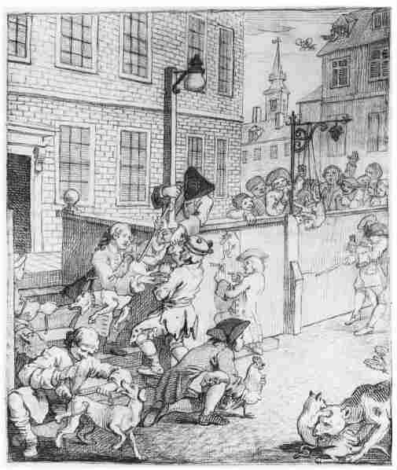

杀猫有一段历史 。也就是说，它是一种随时间流逝而变化的活动，因此可以由历史学家来描述和分析，就像婚姻、宗教、饮食、航海、种族灭绝、捕鱼、异装癖、闻气味和性行为一样。极其简略的杀猫史大概是这样的：在古埃及，猫受到尊崇和敬重，所以当它们的男女主人死去时，猫会被关在坟墓里陪伴它们的主人，最后窒息而死。在欧洲中世纪前期（约400—1000），猫不那么受尊敬了，通常是自然死亡，比如说饿死。在中世纪后期（约1000—1450），猫走向了另一个极端，开始与魔鬼联系起来。亲吻猫的肛门被认为是纯洁派教徒和其他异教徒的共同习惯——或者，至少他们的迫害者是这样说的。有些纯洁派教徒还相信它与魔鬼的关联。有人声称在宗教法官若弗鲁瓦·达布利斯死后，黑猫出现在他的棺材上，这表明魔鬼已经驯服了他本人。所以在中世纪，杀猫是因为人们害怕它们，人们会向它们扔石头将其杀死。到17世纪，猫的公众形象进一步恶化：它被视为女巫的密友，因而和它的男女主人一道被处死。在18世纪的法国，有时会有大量的猫在模仿仪式中被学徒和其他人杀死，他们认为杀猫非常有趣。在我们自己的更开明的20世纪，当然不会再杀猫，除非是出于疏忽、喂得太多或者是为了猫的利益。

图18 18世纪的杀猫（和虐待其他动物的）行为。（贺加斯，《残酷的四个阶段》）
上一章我们将历史学家描述为分属各不相同的部落：政治部落，社会部落，文化部落。但我们也注意到，虽然这些标签由历史学家赋予并由历史学家接受（例如在为学术工作做广告时），但它们并未划定牢不可破的界限。不过，有一种实质性区别将所有历史学家分成了两大群体：一些人相信过去的人们在本质上是和我们一样的，另一些人则相信他们在本质上不同于我们。你也许还记得前面的章节中出现过这种区分：大卫·休谟认为所有“人”在任何时代都是完全一样的，L.P.哈特利则提出过去是一个异邦，人们在那里做着和我们不同的事情。考虑到猫类的死亡在我们所处的今天通常不会引起狂欢，那么关于18世纪学徒从杀猫中发现诙谐趣味的记载，就能为这两种结论提供一个很好的例证。
我们之所以知道历史学家罗伯特·达恩顿 [1] 所称的“猫的大屠杀”，是通过一个叫尼古拉斯·孔塔的印刷所学徒在18世纪30年代末所写的一部自传（有些像小说，但总体上被认为是真实的）。达恩顿主张，无论孔塔的叙述是否完全真实，它仍然向我们展示了一个孔塔期待他的同时代人能够阅读和理解 的故事。文献可以向我们展现超出“实际发生之事”以外的“真相”：它们可以说明人们如何 思考，说明他们在其文化中能利用的形象、语言和联想。
孔塔是这样描述的：两名学徒，杰罗米（孔塔所虚构的自己）和雷维耶，在一间印刷所里生活和工作，印刷所属于他们的老板雅克·文森特。老板的妻子非常喜欢猫，最宠爱的一只叫小灰。好几个晚上，雷维耶——他是一个非凡的模仿者——爬到老板卧室的窗外像猫一样发出叫声，让他的雇主们无法入睡。老板娘最后下令让学徒们除掉这些可恶的（想象中的）猫，但警告他们不要伤害她的宠物小灰。学徒们开始杀猫，包括他们在附近所能找到的每一只猫——首当其冲的是小灰，它的尸体被藏了起来。他们公开屠杀其余的猫，将它们击晕，然后进行部分的模拟审判，宣判其死刑。他们甚至在处决之前为猫提供了忏悔牧师！老板娘再次出现，确信——但是没有证据——他们杀死了小灰。老板也来了，斥责他们只顾杀猫取乐，而没有继续工作。学徒们笑个不停。“印刷工人知道怎么去笑，”孔塔写道，“这是他们唯一的消遣。”
孔塔在他的叙述中表明，杀猫是攻击老板的一种方式，印刷所学徒的生活并不那么愉快。他将雇主富裕的生活方式和他自己的悲惨状态相对照。养猫当宠物（对它们照顾得比对学徒还好）是作为一种象征，来强调资产阶级老板的自我放纵和他们的生活与工人生活之间的距离。但这并不能真正解释大规模的屠杀或者笑声（它不仅出现在血腥行为之后，也出现在这一行为期间）。要做出解释，我们需要——如达恩顿所指出的——探讨猫在18世纪的各种象征意义。它们仍然与巫术和厄运联系在一起。它们还与上层社会相联系——不仅通过作为宠物而被娇纵，而且通过诸如《穿长统靴的猫》之类的民间故事，也许还因为它们好逸恶劳的天然风度。作为放纵和骚乱仪式的一部分，折磨猫在欧洲文化的若干分支中都很普遍。猫还与女人和性有关；la chatte [2] 具有现代英语中pussy一词的双重意义。孔塔的屠猫对于18世纪的法国人来说是有意义 的，我们却不会再对这种方式做出反应。孔塔告诉我们，学徒们在未来的许多场合还会模拟重演这场屠杀，讽刺性地描述老板和老板娘的反应，以逗乐他们的同伴。学徒们的笑声——因为它更是一个关于诙谐的故事，而不仅是关于猫的——可以被视为现代早期以嘲笑进行反抗的传统的一部分，它把骚动行为与诙谐联系起来。
这样，我们可以假定一种独特的“18世纪的思维方式”，它将猫与特权、杀猫与反抗联系在一起。我们还能（如达恩顿所指出的）看到一种“思维方式”——它以在模拟法庭上屠猫为乐——与18世纪法国后来发生的事件之间的关联。例如，在法国大革命期间，sans-culottes （字面意思是“无套裤汉”，在比喻意义上指代“穷人”）于1792年9月草草审判并随即残杀了一千多名“反革命”囚犯。这并不是说杀猫是杀人的一种预演，而是暗示人们的行为可能具有象征性模式。认为过去存在不同的“思维方式”，这样的看法有许多种标签：“时代精神”（或zeitgeist），“文化意识”，特定时代的mentalité （或“心态”）。
最后一个术语变得最广为人知。心态一词是在20世纪前半期由法国历史学家吕西安·费弗尔 [3] 最早使用的，他和他的朋友马克·布洛赫 [4] 一道，开创了一种以“年鉴派”方法（根据他们创办的《年鉴》杂志而得名）而著称的新史学类型。年鉴派有几个目标。一个是将历史研究从政治事件（实现了对修昔底德之塔的又一次逃离）转向经济、社会和文化问题。另一个是试图探讨更加宽广的历史领域——他们称之为longue durée （长时段），寻找过去的深层趋势。与此相关的是一种愿望，想要将气候变化、地理位置、长期经济变迁等知识纳入自己对历史原因的理解之中。该计划在费尔南德·布罗代尔 [5] 的《地中海》一书中达到了顶点，这本宏伟著作试图跨越若干世纪探讨这个巨大的地理区域，它将考察的焦点从国王和政府转向了土地、人民和海洋。年鉴派彻底改变了欧洲大陆历史编纂的面貌，虽然英美历史学界并没有明确地采纳它的宏伟目标。然而心态 的概念对所有的现代历史学家都产生了巨大影响。
对心态的思考，是作为摆脱政治史的“常识性”研究方法的一种方式而出现的，这种方式假定国王、国事顾问和官员们是在和历史学家同样“理性”的基础上做决定的（所以当国王未能做出“正确的”决定时，容许政治史学家将国王评判为“坏的”或“软弱的”），但它也是为了解释他们所考察的资料中的某些元素，这些元素似乎与当代关于何为正常的观念不尽一致。例如，马克·布洛赫分析了“国王的触摸”现象——中世纪君主据称拥有通过身体接触治愈疾病的能力。他坚持认为，不能把这种行为当作与严肃的统治活动无关的历史癖好而加以抛弃，它是国王权威的一个必要部分——从而提醒我们，中世纪的权力观念与我们自己的有多么不同 。伊曼纽尔·勒华拉杜里 [6] （另一位年鉴派历史学家）使用宗教审判记录——与我们在第一章所见到的相似——来描绘农民的心态：他们对魔法、仪式、友情、家庭和性的看法。因此，心态产生于认为过去与现在大不相同的一种感觉，以及要找到方法来分析这些不同（而不是嘲笑它们）的一种尝试。
年鉴派所利用的和后来历史学家所继续利用的，是一个不同学科——人类学的洞见。对社会和文化感兴趣的历史学家发现，他们需要一种方式来思考人类互动的模式，即人们何以行事的未被阐明的 （有时是未被承认的）原因。将自己的时间用于研究和分析异文化的人类学家，为思考这些事情提供了有用的框架，给了历史学家一种语言来讨论仪式、社会空间的安排、一种性别对另一种性别的控制等问题。心态成了一种简单的说法，用以概括在过去时代所发现的各种假设、实践和仪式。
使用心态这个词意味着，如我所说，认为过去的人们和这个时代的我们在本质上有所不同。稍后我们将讨论这种看法是否正确。我们首先应该注意到，心态的观念还意味着另外两种认知实践：将人类历史的时间跨度划分为不同的时期，以其创造者从未采用过的方式来解读历史证据。
如我们所见，至少从纪元开始，难以把握的宏伟时间被划分为更容易处理的部分，譬如奥古斯丁划分出人类的六个世代。最主要、最普遍的划分是古代、中世纪和现代（容许古代晚期，中世纪早期、盛期、晚期，现代早期等细微的差别）。显而易见但不可忽略的一点是：这些划分是由人类做出的，因而是武断的。生活于“中世纪早期”的人们不会——不能 ——给自己贴上这个标签。对他们来说，他们生活于“现在”，正如我们一样。他们对自己的“现在”将去向何方可能有不同的看法——这是通向世界末日和上帝审判之旅的最后一步，但它仍然是“现在”。我们回头观望，在沙地上随意划线，从中切下这个时期，将纷繁复杂的两千余年裁剪成种种形状，使之更易于理解。我已经提到了几大片：古代、中世纪和现代。但是还有通常被我们遗忘的更小的片：例如世纪和年代。“18世纪”是指代1700至1799年的便捷方式，但它仍然是一种武断的划分。在西方历法中，现代只不过运转了几百年，而且现代具有文化上的独特性（例如它在年代上不会遵循犹太人或中国人的历法）。把“世纪”作为比如说“国王统治”的对立面来思考，只是在最近两百年左右才普及起来。当修昔底德撰写伯罗奔尼撒战争史的时候，他在为读者制作一份清晰的年表时遇到了障碍，因为不同的希腊城邦用不同的方式标记年代，一年中的不同月份也有不同的名称。他不得不创造出他自己的体系（将战争进行的年份编上从一到六的序号，再把它们分为“冬天”和“夏天”），而我们也继承了我们自己的——同样是创造出来的——方案。
但是，这些沙地上的线条开始有了更广泛的联系：如果我们要讨论“18世纪的思维方式”，我们会不会假定它在1799年12月31日午夜变成别的东西了呢？我们谈论“60年代”和“70年代”的西方，以说明我们认为这些年代所具有的本质性或独特性的东西。但这同样是一种简单的说法——现代历史学家最近开始争论，“60年代”（他们用它来表示一系列文化观念和价值）其实 是从1964年到1974年。同样地，另一些历史学家有时会讨论“漫长 的18世纪”，也就是说，一个在某种程度上超越了通常一百年的世纪。将时间划分为时期，这无疑是有用的，也许还是不可避免的，但是需要对它保持警惕。每一个“60年代”的人都会在头发上戴花、服迷幻药、前往伍德斯托克 [7] 吗？如果不是，我们为什么要选择这种生活模式——这种心态——作为那个十年的“基本”形象呢？
最近，多数发达国家都在关注2000年可能发生的灾难，因为它是一个千禧年。这些忧虑有的很极端，例如美国“天堂之门”教的那些信徒们相信上帝的审判即将来临，因而选择了自杀。有的忧虑则相当理性，例如担心计算机芯片因为无法处理新的日期而失灵。不过我们可以记住，生活在一千年以前的人们也经历了某种忧虑——事实上也许更甚，因为在那些日子里他们更加坚定地认为上帝要计划终结人类的历史。我们还可以思忖这一事实，即“2000年”（虽然存在微芯片设计上的缺陷）是人类的创造，其基础是一种直到最近才为世界上部分人口所使用的武断的历法。严格说来，当年份从“99”变成“00”的时候，我们认为自己究竟发生了什么变化呢？
但这并不意味着，将时间武断地划分为时期是与人类的生活和历史无关的。虽然千禧年的日期是武断的，但它毋庸置疑地影响了人们的行为方式。它在广播、电视和互联网中被详细地讨论。它促使人们去储藏食物、寻找神灵、抛却信仰、酩酊大醉或者孕育孩子。或许，这就是我们的心智——我们心态的一部分。但它大概不会是21世纪末人们的心智，至少21世纪末的人们不会以完全相同的方式来思考它。同样，18世纪的人们的确 是以不同于我们的方式在思考（进而实践）至少某些主题。分期——将时间划分为更小的单位——可能会将我们引向错误的思考模式，但它作为一种审视过去的方式或许是不可避免的，并能帮助我们了解人们是怎样因时而变的。
要理解不同的思维方式、不同的心态，就得小心翼翼地使用资料。如我所指出的，它要求以其创造者从未采用过的方式来解读资料，寻找他们从未考虑过的意义。这通常被现代历史学家称为“反对谷物的解读” [8] ，“谷物”指的是资料想要 采纳的方向和主张。显而易见，历史学家解读特定的资料，必然意味着以不同于其创造者的方式来使用它们。比如说，当15世纪佛罗伦萨的官员们创造出被称为catasto的大量税收记录时，其目的在于城市的财政管理。但现代历史学家得到了这一庞大资料，他们将其中的信息录入计算机数据库。这使他们得以看到佛罗伦萨人从未发现（既没有兴趣也没有时间）的显著模式：关于婚姻、生活周期、家庭、性别和劳动分工的模式。
但另一些资料也许更成问题。比如索尔兹伯里的约翰 [9] 写的《政治制度》，这是一本撰写于12世纪的政治哲学著作。《政治制度》想要给君主政体提供一种模式，而且（和税收记录不同）不仅是为了给作者当代的人阅读，也是为了给后来时代的其他人阅读的。然而，历史学家可以用一种不同的方式来解读《政治制度》：注意到索尔兹伯里的约翰以“身体”来象征社会（国王是头，国事顾问是心脏，农民是脚等等），他们可以坚持这一象征是为了提供一幅“自然”而静态的中世纪社会图景，并将其与中世纪文化中“身体”的其他常见用途联系起来，或许可以由此辨识出一种中世纪的心态。索尔兹伯里的约翰并不“知道”自己在书写象征化的身体——他认为自己写的是政治。但历史学家可以在他的文本中发现其他的意义。这会不会让我们产生片刻的疑虑呢？要是未来某个傲慢的学者阅读我们的书信、日记、电子邮件，声称我们在写作时并不“知道”自己正在揭示什么，我们会做何感想呢？
我们会感到愤慨（当然，尽管我们已经死去）。但是应该注意到，不管我们喜不喜欢，文本是有生命的，在作者死去之后文本会继续变化和改动，而无论历史学家是否在场。例如，《政治制度》被后来的政治理论作家所阅读，他们以完全不同的方式来使用它，从中提取出其他的意义。在特定的时刻，它不再是一个好政府的模式，而成了一个来自过去的有趣的时代错置，使更“现代的”思想家们可以提出更好的模式。文本意义的变化过程并不仅限于学术著作：你也许听过美国歌曲作家布鲁斯·斯普林斯汀的歌曲《生于美国》。它是作为一首抗议歌曲被创作出来的，针对的是越南战争对美国军人的后续影响，以及社会如何让他们失望。然而，它却很快被左翼的里根政府挪用为一首赞扬爱国主义自豪感的颂歌。就是这样：写出、唱出、说出的任 何东西 ，都可以被用来表示不同的东西。它也能告诉读者一些关于作者的事情，它们是作者本人都没有完全意识到的。和任何其他著作一样，本书也许充分显示了我的，或许是我这一代人的不自觉的偏见。我为什么要选择我在这些章节中所使用的特定 历史事例呢？显然是因为我认为它们有趣、值得去思考，但它们是我的 选择，是在特定的文化背景中、在特定的时刻所做的选择。
所以，如果我们不仅要了解人们想的是“什么”，而且要知道他们怎样 思考的话，那么“反对谷物的”资料解读不仅是容许的，而且可能是必须的。过去二十年间，在文献中发现的语言、形象、象征越来越引起历史学家的兴趣，部分原因在于文学理论家对历史学界的影响。例如，不同时代和地方所使用的侮辱性语言，可以展现文化中的迷人变化：在中世纪人可能被称为“狗”或“山羊”，在现代早期更可能是“老马” [10] 或“杂种”。前者来自乡下的环境和动物的象征意义，后者来自关于性和社会幽默的观念。但这里还有另一个问题，它同样是语言问题。在历史学家撰写其真实故事的时候，他（她）如何将过去的心态翻译给现代读者呢？要用谁的话来解释资料（从而解释过去）呢？是死者的，还是生者的？
死者的话可能具有欺骗性。它们有时和我们所说的话相同或相似，却意味着不同的事情：例如，“农场”（farm）对中世纪的人们来说意味着租费或税金；现代早期，“放荡”（lewd或lewed）指的并非是缺乏礼貌而是缺乏知识。当后来的历史学家回顾20世纪80年代，发现多种事物都被从其反面描述为“坏”或“邪恶”的时候，类似的问题大概也对他们产生了影响。孔塔的学徒们把他们的老板描述为“资产阶级”，但它要早于卡尔·马克思对这个概念的更为人熟知的用法，它们不是一回事。
而且，“像过去的人们所理解的那样”描述一件事，实际上意味着以特定的 历史人物所理解或希望它被理解的方式去描述事件。记录英国1381年起义的中世纪编年史家，将该起义描述为一场“动物”般的人们所发动的盲目叛乱，但起义者对此并不这么看（他们认为自己是在像良好的英国臣民那样行事，是在向国王发出呼吁）。当时英国对法国大革命的报道，也为“无套裤汉”们描绘了一幅近乎野蛮的画面，因为害怕“暴徒”会出现在海峡的这一边，但是同时，革命者认为他们是在为自由、平等、博爱而战斗。
历史学家需要意识到过去语言的微妙之处——比如说，要理解“权利”之类的微妙概念在不同时代、不同地方变化着的焦点和意义，但是历史学家绝不能变成古代词汇的奴隶。“民主”产生于古代雅典，或者我们愿意相信是这样，但没有一个古代史学家会将这个城邦的统治等同于20世纪的代议政治。美国宪法的制定者在普遍和“天赋”的意义上谈论“权利”（“我们认为这些真理是不言自明的……”），可他们并不相信妇女和穷人应该拥有选举权，而且他们还占有奴隶。他们并不是彻头彻尾的伪君子，在某种程度上他们是那个时代的产物。他们在自己的世界中将某些东西视作理所当然，他们也是这些理所当然之物的产物。不过，如果对你个人有好处的话，将一件事——譬如奴隶制——视为理所当然要容易得多。实际上并不是每一个18世纪的美国人都支持奴隶制，有些政治激进主义者对这种做法进行了严厉批评。时代的话语又一次成了特定 人群的话语，因而与权力斗争相纠缠。
然而，生者的话同样会给我们制造难题。使用现代标签来描述过去，可能会导致危险的时代错置，尤其是当那些标签指向一些新近才发明、却声称具有超越时代和文化之普遍适用性的概念时。因为文艺复兴时期的意大利城邦允许特定的公民选举特定的官员而将该城邦描述为“民主的”城邦，就是在把关于什么是正确和公正——另外两个棘手的词语的现代联想运用到遥远的情境。当时的人会谈论“共同的善”，谈论“好政府”，拥有他们自己的管理事物的最佳模式。还有一些词可能更棘手：对我们来说，“爱上”某人也许意味着流星、灵魂的伴侣、眼神的交流、一致的心跳等形象。这种“爱”的概念是19世纪的发明；此前时代的人们也会“爱”，但其爱的观念所涉及和意指的内容是不同的，比如说，较少涉及两个个体之间的联系，而更多意指不同的家庭如何通过婚姻被连在一起。这不是要否认过去人们的情感，而是要允许他们有他们的 情感，而不是将他们的情感转换为我们自己的。
有时候，运用特定的词汇回溯过去无疑是有用的，它使历史学家能够总结出当代人并不完全了解的某种过程或状态。不过这里的危险在于，创造一个术语的原因被忘记，一次次的使用让它僵化成某种想当然的、未经审查的东西。历史时期和事件特别容易陷入这一过程：例如，“文艺复兴”和“启蒙运动”可以通过其用法的熟悉性，获得一种虚假的连贯性和完整性。甚至像“英国内战”这样实实在在的事情也会出问题：有些历史学家认为其他的术语，比如说“叛乱”或“革命”，会更加管用（并且意味着完全不同的内容）。无论如何，不存在一场单独的战争，只有一系列的冲突——在17世纪至少发生了三次英国内战。另一个棘手的词是“封建主义”，它用来描述中世纪的社会等级制，人们被土地所有权和相应的义务所束缚。这个词是一个更晚的发明，如同许多人所争论的，它混淆了中世纪的土地与义务、工资、习俗、法律之间各种神秘而异质的联系。尽管如此，它仍在被使用，也许仅仅是因为它是一个有用的简单说法。
这将我们带回到心态的概念上来，心态是一个有关时代文化及其如何影响人们的思想和行为的简单说法。我在前面提到，区分历史学家的方式之一，是看他们是否相信过去的人们在本质上与我们相同。也许还有其他问题：在使用心态这样的词语时，历史学家是否认为特定时期的思想存在一个整体模式？16世纪的人是否不同于我们？过去的人是否以相同的方式 不同于我们？谈论“16世纪的思维方式”或者“16世纪的心态”，可以说明存在一种“16世纪”的特性，这是历史学家可以识别的关键或核心。如果答案是肯定的 ，那又会引发另一个问题：如果他们与我们如此不同，历史学家究竟如何能够理解他们呢？
有人说，虽然时间的流逝会引起变化，但某些事情是历史上的所有人都会经历的，这些事情将我们联系在一起：出生、性和死亡。（事实上按照这一思路，大概也能声称所有人都经历过疲倦、头痛和消化不良，但既然它们看起来既没有戏剧性也没有哲学性，我们会将其忽略掉。）有人声称，通过人类的这些关键时刻，能够获得对过去生命的真正理解，再次走进他们的大脑，考虑他们的想法。
问题在于，这三个关键时刻中有两个是我们自己都没有经 历 的，至少不是以我们所能叙述的方式（我从未听到任何人用令人信服的语言描述过被生下来的感觉或者死亡的感觉）。我们拥有别人观察这些时刻或者与之互动的经验——历史在这里再次登场，因为这些事情是随着时间而变化的。以出生为例：女性如何怀孕，她们如何理解妊娠的过程，出生时有谁在场，出生前后的仪式，对待新生婴儿的方式——所有这些事情都因时、因地而变。古代的某些孕育理论断言，只有男人的种子是必不可少的，女人不过是一个容器。中世纪有的医生认为女人也提供“种子”，有人则相信女人必须达到高潮才能怀孕。但到19世纪，男人不知怎么忘了女人是有高潮的。中世纪偶尔会采用剖腹产，但它负载着魔鬼的含义，因为孩子不是“女人生的”。如今剖腹产在西方社会已经很常见了。过去，有时会故意把婴儿单独留在户外过夜，看他们是否足够强壮，能够活下来（因为要是孩子活不长的话，谁愿意多喂一张嘴巴呢）。而在最近的时代，人们会因为让孩子单独待上不到一个小时而被捕。
死亡——别人对死亡的经历和理解——也发生了巨大的变化。前基督教时期的战士希望遭遇迅速而短暂的死亡，期待在战场上英勇地死去。基督教骑士期待漫长的死亡，这样他们可以知道随后发生的事情，并有时间准备好自己尘世的美德和自己的灵魂。有些人曾经认为作为一种丧葬形式把人吃掉是恰当而且可敬的。另一些人认为将数百万同类锁在集中营里有计划地杀死是合理的。他们的敌人则认为扔下威力巨大的炸弹，在瞬间杀死千百万人是一个好主意。某些死去的人认为自己的灵魂会在新的身体里重生；另一些人认为自己会生活在这个世界之外的另一个世界；更多的人认为什么都不会再发生，死亡是一个大大的句号。
这里的关键是，虽然任何时代的任何人都确实会出生和死去，但他们对这些过程的看法却迥然不同，很难从中发现什么“本质”可供历史学家把握。性（它无论如何不是每个人都会经历的，不管是出于选择还是偶然）甚至更加混乱。任何历史时期都有它自己的观念，以确定年龄、性别、肤色、地位、目的、期限的哪些组合形式是可取的、可能的、可允许的和可敬的。
但今天仍然活着的每一个人也是如此。当然，我们往往根据自己的喜好和偏见聚在一起，我们个人的想象也许没有那么丰富。但在整体意义上，我们是多元的、复杂的和不寻常的。我在本章开头指出，20世纪的我们不再杀猫并从中取乐。总体而言这当然是对的，但它并非故事的全部。虽然我从未看见它发生过，但我读到了足够多的记载——美国的年轻人用焰火来折磨猫，因为觉得这很有趣——令我怀疑它仍旧存在于现实中。心态的问题——或许也是解决之道——在于，过去的人们不同于我们，正如我们不同于我们自己 。在特定的时刻，他们——还有我们——保持着不同的行为模式，历史学家当然可以找出这些模式，但他们既不和我们完全相同，也不和我们完全不同。也许历史学家所能做的事情之一，就是帮助我们反思这一整句话，回顾过去以重新审视现在。
这就提出了我们认为历史是为了 什么、我们为何要费心去研究它的问题。下一章，我们将对真相和解释，以及历史何以重要做出进一步的思考。